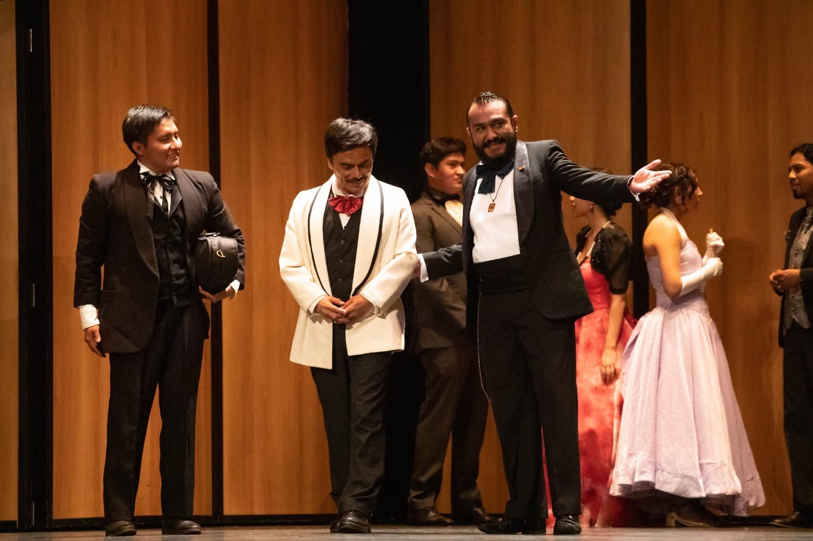

Proyectos
Siete Maneras de Amar
Desde 2008, cada febrero se celebra un evento que honra al amor y la amistad. "Siete Maneras de Amar" es un espectáculo que reúne siete obras cortas, cada una explorando una faceta distinta del amor. Bajo la dirección de siete directores y directoras, este proyecto es un espacio de experimentación creativa que reta a los integrantes del grupo en áreas como la dirección, la dramaturgia y la actuación, atrayendo al mismo tiempo a un público diverso.
Historias que Trajo el Mar
Este proyecto escénico, liderado por la titiritera Hanne Jiménez, es un viaje sensible que busca visibilizar y honrar nuestra tercera raíz: la africana. La dramaturgia, creada por Wagive Turcott, adapta para títeres el cuento "Violeta y Azul" de Mijane Jiménez y el antiguo mito africano "Kodilikana", invitando a la audiencia a un acercamiento profundo con la historia y la cultura.
Dios y Macedonio
Un emotivo homenaje escénico a la vida y obra del célebre músico oaxaqueño Macedonio Alcalá. Escrita por Wagive Turcott, esta obra de teatro busca rescatar el legado de Alcalá y enriquecerlo con sucesos que forman parte de la memoria colectiva de Oaxaca. Estrenada el 5 de febrero de 2017 en el Teatro Macedonio Alcalá, "Dios y Macedonio" fue un éxito rotundo, logrando reunir a más de 1000 espectadores en su primera temporada con la participación de más de 80 artistas en escena.
Pastorela Anda Suelto Lucifer
Bajo la dirección de Carlos Cruz, esta divertida pastorela de Juan Sahagún recrea con humor las hazañas de los pastores en su camino a Belén, mientras enfrentan las tentaciones y los trucos del mal. Un clásico del teatro popular que se presenta en un formato lleno de alegría y diversión.